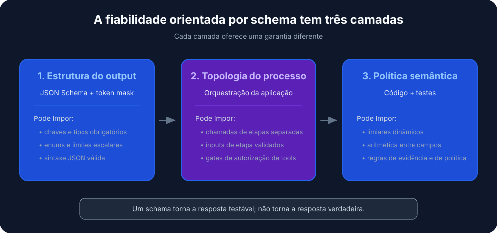
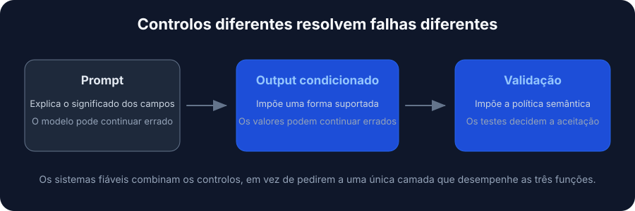
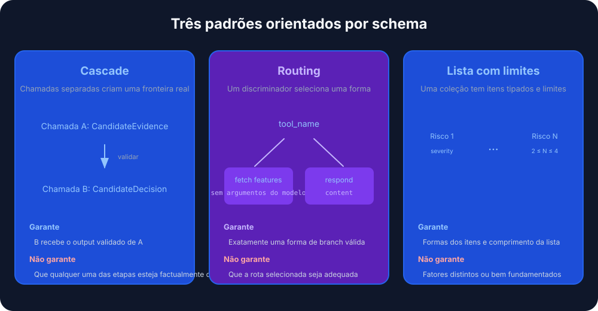
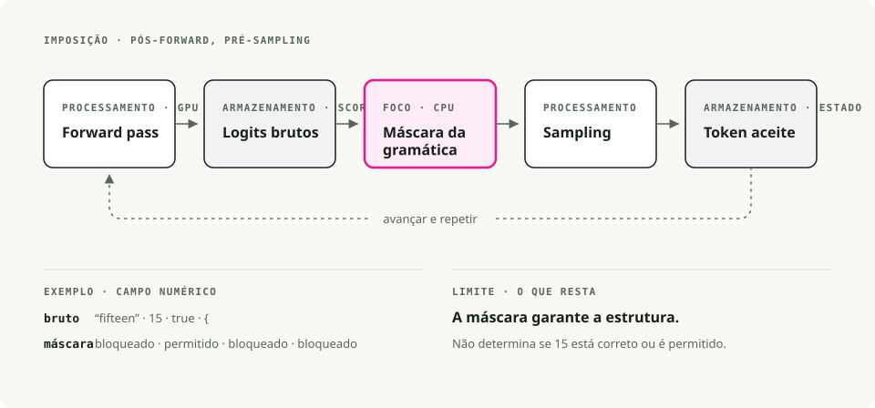
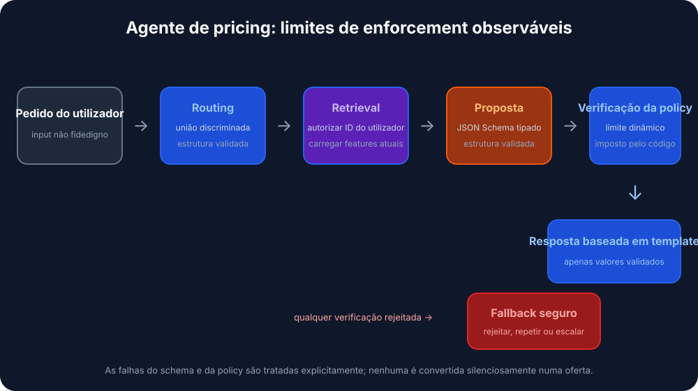

Tradução automática
Este artigo foi traduzido automaticamente a partir da versão original em inglês.
Raciocínio Guiado por Esquema em vLLM: Outputs Estruturados com xgrammar e Pydantic
Um ciclo de retries é uma confissão. Diz: eu esperava que o modelo devolvesse JSON válido, não devolveu, por isso vou voltar a lançar os dados. A maior parte do código de agentes LLM com que trabalhei depende fortemente de retries, e mesmo assim o JSON continua a sair partido vezes suficientes para alguém ligar um alerta por causa disso.
Schema-Guided Reasoning (SGR) evita o jogo dos retries ao impor o esquema ao nível do token. Define-se a topologia do raciocínio como um esquema Pydantic, e o motor de inferência mascara qualquer token que violaria esse esquema antes da amostragem. O output é válido por construção, não por retry.
TL;DR. SGR usa constrained decoding para fixar o output de um LLM a um esquema Pydantic que controlas. Se o combinares com o backend xgrammar do vLLM, obténs JSON válido sempre, com overhead de latência negligenciável.
O que é Schema-Guided Reasoning?
Schema-Guided Reasoning é uma técnica que Rinat Abdullin descreveu em 2024. Em vez de deixar o modelo completar texto livremente (o que pode ser inconsistente ou ambíguo), dás-lhe um template estrito que define:
- por que passos tem de passar, para que não possa saltar a análise
- a ordem desses passos, para que o raciocínio vá dos dados à decisão
- onde deve concentrar a atenção, para que a profundidade fique onde importa
Pensa nisto como uma checklist cognitiva que o modelo tem de seguir.

Porque é que o SGR importa
Quando defines um esquema com campos como churn_analysis, margin_math e max_discount_percent, o modelo tem de os preencher por ordem. Não pode saltar diretamente para a decisão de desconto sem primeiro escrever a análise.
Isto dá-te:
- raciocínio reproduzível em execuções repetidas
- outputs auditáveis em que cada passo pode ser inspecionado
- campos intermédios que podes avaliar contra um dataset de teste
- modelos mais pequenos que passam a ser viáveis, porque o esquema impõe aquilo que, de outra forma, o modelo teria de aprender
- o ganho de precisão de 5-10% frequentemente reportado em workloads de produção
SGR vs Chain of Thought vs prompt engineering
As três abordagens diferem sobretudo na força com que restringem o modelo.

| Feature | Prompt Engineering | Chain of Thought | Schema-Guided Reasoning |
|---|---|---|---|
| Estrutura do Output | Texto variável | Prosa livre | JSON/Pydantic rígido |
| Mecanismo de Controlo | Persuasão semântica (\"Please output JSON\") | Prompting heurístico (\"Let's think step by step\") | Constrained decoding (baseado em gramática) |
| Fluxo de Raciocínio | Determinado pelo modelo | Determinado pelo modelo | Determinado pelo developer (topologia do esquema) |
| Auditabilidade | Baixa (requer parsing) | Baixa (requer ler prosa) | Alta (inspeção ao nível do campo) |
| Integração | Difícil (parsing com regex) | Difícil (formato variável) | Trivial (desserialização nativa para objeto) |
| Taxa de Erro | Alta (variabilidade de formato) | Moderada (alucinação de formato) | Quase zero (sintaxe imposta pelo motor) |
| Requisito do Modelo | Forte seguimento de instruções | Forte capacidade de raciocínio | Funciona também com modelos mais pequenos |
Prompt engineering: persuasão semântica
Please analyze the customer data and output your response as valid JSON
with the following structure: {"discount": <number>, "reason": <string>}
Be careful with the formatting!
Estás a esperar que a compreensão do modelo de \"output JSON\" se sobreponha à sua tendência para ser conversacional. Uma atualização do modelo, uma alteração de temperatura ou um exemplo few-shot diferente podem partir o teu parser.
Chain of Thought: melhor raciocínio, o mesmo problema de estrutura
Let's think step by step:
1. First, I'll analyze the customer's churn risk...
2. Then I'll calculate the margin...
3. Therefore, I recommend a 15% discount.
CoT melhora a precisão do raciocínio, mas piora a estrutura. O output é prosa imprevisível, quase impossível de fazer parse de forma fiável. Normalmente acabas por fazer uma segunda chamada ao LLM só para extrair os dados estruturados.
SGR: chain of thought estruturado
O SGR mantém a intuição do CoT de que o raciocínio intermédio melhora a precisão. Apenas formaliza os passos:
class PricingLogic(BaseModel):
# 1. Data Analysis (must complete before decision)
churn_analysis: str = Field(..., description="Analyze churn_probability")
financial_analysis: str = Field(..., description="Analyze cart_value and margin")
# 2. Math Enforcement (explicit calculation)
margin_math: str = Field(..., description="Calculate: 'Cart $X * Y% = $Z'")
# 3. Decision Constraint (bounded by prior analysis)
max_discount_percent: float = Field(..., description="Max allowed discount")
# 4. Final Output
offer_code: str
customer_message: str
O modelo não pode produzir max_discount_percent até que churn_analysis, financial_analysis e margin_math estejam preenchidos. O esquema impõe a ordem do raciocínio.
Padrões de SGR
O SGR tem três padrões centrais que se compõem em workflows maiores.

1. Cascade: passos de raciocínio sequenciais
Cascade impõe uma ordem de raciocínio. Cada campo tem de ser completado antes do seguinte.
from pydantic import BaseModel
from typing import Literal, Annotated
from annotated_types import Ge, Le
class CandidateEvaluation(BaseModel):
"""Evaluate a job candidate with enforced reasoning order."""
# Step 1: Summarize (forces context awareness)
brief_candidate_summary: str
# Step 2: Rate (bounded integer)
rate_skill_match: Annotated[int, Ge(1), Le(10)]
# Step 3: Decide (constrained choices)
final_recommendation: Literal["hire", "reject", "hold"]
Boas aplicações: avaliação de candidatos, classificação de documentos, análise de compliance, diagnóstico médico.
O modelo tem de escrever brief_candidate_summary antes de poder classificar, e classificar antes de poder recomendar. Não há atalho.
2. Routing: um switch statement semântico
Routing faz o modelo comprometer-se com um caminho entre um conjunto de opções, implementado com tipos Union.
from pydantic import BaseModel
from typing import Literal, Union
class FeatureLookup(BaseModel):
"""Route to database lookup."""
rationale: str
tool_name: Literal["fetch_user_features"] = "fetch_user_features"
user_id: str
class GeneralResponse(BaseModel):
"""Standard response for non-pricing queries."""
tool_name: Literal["respond"] = "respond"
content: str
class RouterSchema(BaseModel):
"""The model must pick exactly ONE branch."""
action: Union[FeatureLookup, GeneralResponse]
Boas aplicações: classificação de intenções, seleção de ferramentas, triagem de suporte, dispatch multi-agente.
O discriminador Literal (tool_name) faz com que o modelo escolha um único ramo e preencha apenas os campos de que esse ramo precisa.
3. Cycle: raciocínio repetido com listas
Cycle força o modelo a produzir vários itens, com limites sobre quantos.
from pydantic import BaseModel
from typing import List, Literal, Annotated
from annotated_types import MinLen, MaxLen
class RiskFactor(BaseModel):
explanation: str
severity: Literal["low", "medium", "high"]
class RiskAssessment(BaseModel):
"""Generate 2-4 risk factors."""
factors: Annotated[List[RiskFactor], MinLen(2), MaxLen(4)]
Boas aplicações: avaliação de risco, extração de issues, chamadas paralelas a ferramentas, planeamento multi-passo.
Os limites MinLen e MaxLen impõem pelo menos 2 e no máximo 4 itens. Combinado com Routing, é assim que se faz o dispatch de um batch de chamadas a ferramentas com largura fixa.
Fazer o SGR funcionar: constrained decoding
Os padrões acima são apenas esquemas Pydantic. O que os torna vinculativos é o constrained decoding (também chamado Structured Output).
O constrained decoding modifica o passo de geração de tokens. Em vez de deixar o modelo amostrar livremente do seu vocabulário, o motor aplica uma máscara de gramática que bloqueia tokens que violariam o esquema. Isto acontece no motor de inferência, não no código da tua aplicação.
[!TIP] O SGR não exige \"reasoning models\" como o1 ou DeepSeek-R1. Funciona bem com modelos instruction-tuned, e especialmente bem com modelos destilados a partir de modelos de raciocínio.
Cloud providers que o suportam
A maioria dos providers modernos de LLM oferece structured outputs através de constrained decoding:
| Provider | Support |
|---|---|
| OpenAI | Structured Outputs (incluindo Azure). GPT-5 uses JSON Schema via llguidance |
| Google/Gemini | JSON Schema support since Nov 2025 (Pydantic and Zod) |
| Mistral | Custom Structured Output |
| Grok | Structured Outputs for multiple models |
| Fireworks AI | JSON Schema |
| Cerebras | Structured Outputs |
| OpenRouter | Depende do provider a jusante, faz o mapeamento para JSON Schema |
Motores de inferência que o suportam
Para modelos self-hosted, todos os motores principais têm um backend de constrained decoding:
| Engine | Backend |
|---|---|
| vLLM | xgrammar ou guidance |
| SGLang | Outlines, XGrammar, ou llguidance |
| TensorRT-LLM | GuidedDecoding |
| Ollama | Structured Outputs |
Porque é que este artigo se foca em vLLM e xgrammar
Algumas razões:
- vLLM é o motor open-source de inferência LLM mais amplamente usado, por isso o que constróis aqui transporta-se facilmente.
- xgrammar está implementado em C++ e acrescenta latência negligenciável.
- A API do vLLM é compatível com OpenAI, o que mantém barata a migração a partir de cloud providers.
- xgrammar trata esquemas aninhados complexos, unions e estruturas recursivas.
A secção seguinte explica como o xgrammar impõe realmente um esquema ao nível do token.
Como o xgrammar impõe esquemas
Vale a pena perceber esta parte com precisão, porque muda a forma como fazes debug e tuning de workflows SGR.

Onde acontece a máscara
O xgrammar modifica os logits de output depois do forward pass do modelo e antes da amostragem. Não altera o próprio modelo; filtra que tokens podem ser selecionados.
Um ciclo de inferência standard é assim:
1. Input tokens → GPU Forward Pass → Logits (probability scores for all ~128K tokens)
2. Logits → Sampling (temperature, top-p, etc.) → Next Token
3. Repeat until done
O xgrammar insere-se entre os passos 1 e 2:
1. Input tokens → GPU Forward Pass → Raw Logits
2. Raw Logits → xgrammar Logits Processor → Masked Logits
3. Masked Logits → Sampling → Next Token (guaranteed valid)
4. Repeat until done
O modelo continua a calcular a distribuição de probabilidade completa na GPU. Depois, o xgrammar corre no CPU e aplica uma bitmask a esses logits antes da amostragem. Os tokens inválidos ficam com os logits definidos para -∞, o que faz com que a sua probabilidade seja exatamente 0 após o softmax.
Duas fases
O xgrammar divide o trabalho entre tempo de compilação e runtime, o que é o que o torna rápido.
Fase 1: compilação da gramática, uma vez por esquema
# This happens once per schema
tokenizer_info = xgr.TokenizerInfo.from_huggingface(tokenizer)
grammar_compiler = xgr.GrammarCompiler(tokenizer_info)
compiled_grammar = grammar_compiler.compile_json_schema(schema_json)
Durante a compilação, o xgrammar:
- Converte o JSON Schema numa Context-Free Grammar.
- Constrói um Pushdown Automaton (PDA), que é uma máquina de estados com uma stack para conseguir tratar estruturas aninhadas como
{"a": {"b": {"c": ...}}}. - Pré-computa que tokens são válidos em cada posição da gramática. O resultado é a \"adaptive token mask cache.\"
- Categoriza tokens como \"context-independent\" (cacheáveis) ou \"context-dependent\" (têm de ser verificados em runtime contra o estado da stack).
[!NOTE] Cerca de 99% dos tokens acabam por ser context-independent e ficam em cache (XGrammar paper). A maioria das verificações de validade em runtime são apenas lookups na cache, e é por isso que o xgrammar é rápido.
Fase 2: geração da máscara em runtime, em cada token
Em cada passo de geração:
- O
GrammarMatcheracompanha a posição atual na gramática. - Faz lookup da máscara pré-computada para tokens context-independent.
- Executa o PDA para verificar os restantes tokens context-dependent.
- Combina tudo numa bitmask final e aplica-a aos logits.
Porque pushdown automata e não regex?
Por causa do aninhamento. Uma expressão regular (uma finite state machine) não consegue corresponder de forma fiável a estruturas como:
{ "user": { "profile": { "settings": { "theme": "dark" } } } }
A parte difícil são as chavetas de fecho }}}: tens de te lembrar de quantas abriste. Um Pushdown Automaton tem uma stack que acompanha isso, por isso consegue tratar profundidade de aninhamento arbitrária. É também por isso que o xgrammar consegue impor tipos Union, objetos aninhados e esquemas recursivos, onde abordagens baseadas em regex ficam aquém.
Um exemplo concreto: gerar um campo float
Quando o modelo está a gerar "max_discount_percent":, o xgrammar sabe pelo esquema que vem a seguir um float. A máscara:
- permite (probabilidade inalterada):
0,1,2, ...,9,.,- - bloqueia (probabilidade definida para 0):
",{,[,true,false,nulle o resto do vocabulário de 128K+
O forward pass pode ter atribuído alta probabilidade à palavra "fifteen". Depois da máscara do xgrammar, esse token tem probabilidade 0. O modelo é obrigado a produzir dígitos.
Porque \"overhead quase nulo\"
Três razões:
- Execução paralela. O cálculo da máscara no CPU sobrepõe-se ao forward pass seguinte no GPU. Enquanto o GPU está a calcular logits para o token N+1, o CPU está a calcular a máscara para o token N.
- Caching. A maior parte do trabalho de validade é feito em tempo de compilação. Em runtime são sobretudo lookups na cache.
- Implementação em C++. O hot path é C++, não Python, e a máscara é aplicada aos logits in place.
Nos benchmarks, o xgrammar mostra overhead negligenciável, e a geração estruturada pode ocasionalmente ser mais rápida do que a geração não restringida porque o vocabulário restringido torna a amostragem mais barata.
Implementação prática com vLLM
A referência é o projeto sgr-discount-manager, uma pequena demo que usa SGR para pricing dinâmico.

Estrutura do projeto
sgr/
├── agent.py # Main orchestration
├── models/
│ └── schemas.py # Pydantic SGR schemas
├── prompts/
│ ├── routing.py # Phase 1 prompts
│ └── pricing.py # Phase 3 prompts
├── store/
│ └── hybrid_store.py # Hot/Cold data retrieval
└── utils/
└── llm_client.py # LLM client wrapper with xgrammar
Passo 1: definir os esquemas
# sgr/models/schemas.py
from pydantic import BaseModel, Field
from typing import Literal, Union
# --- Phase 1: Routing (Union for branching) ---
class FeatureLookup(BaseModel):
"""Route to DB lookup if pricing context is needed."""
rationale: str
tool_name: Literal["fetch_user_features"] = "fetch_user_features"
user_id: str
class GeneralResponse(BaseModel):
"""Standard response for non-pricing queries."""
tool_name: Literal["respond"] = "respond"
content: str
class RouterSchema(BaseModel):
action: Union[FeatureLookup, GeneralResponse]
# --- Phase 2: Pricing Logic (Cascade for sequential reasoning) ---
class PricingLogic(BaseModel):
"""
Strict reasoning topology for dynamic pricing.
Fields are ordered to enforce the analysis→decision flow.
"""
# 1. Data Analysis (Reflection)
churn_analysis: str = Field(...,
description="Analyze churn_probability (High > 0.7).")
financial_analysis: str = Field(...,
description="Analyze cart_value and profit_margin.")
# 2. Hard Math Enforcement
margin_math: str = Field(...,
description="Calculate absolute profit: 'Cart $200 * 0.20 Margin = $40'.")
# 3. The Decision Constraint
max_discount_percent: float = Field(...,
description="Max allowed discount %. NEVER exceed margin.")
# 4. Final Output
offer_code: str = Field(..., description="Generated code (e.g. SAVE20).")
customer_message: str = Field(..., description="The final polite offer text.")
Passo 2: um cliente LLM que ativa o xgrammar
# sgr/utils/llm_client.py
from openai import OpenAI
from pydantic import BaseModel
from typing import TypeVar
import json
T = TypeVar("T", bound=BaseModel)
class LLMClient:
"""Wrapper for vLLM with xgrammar-enforced structured generation."""
def __init__(self, base_url: str = "http://localhost:8000/v1"):
self.client = OpenAI(base_url=base_url, api_key="EMPTY")
self.model = self._get_available_model()
def _get_available_model(self) -> str:
"""Auto-detect the model running on vLLM server."""
try:
models = self.client.models.list()
if models.data:
return models.data[0].id
except Exception:
pass
return "Qwen/Qwen2.5-7B-Instruct"
def run_sgr(self, messages: list[dict], schema_class: type[T]) -> T:
"""Run inference with Schema-Guided Response constraints.
Uses vLLM's guided_json with xgrammar backend to enforce
strict schema constraints at the token generation level.
"""
schema_dict = schema_class.model_json_schema()
# Enhance system message with schema for model guidance
enhanced_messages = messages.copy()
if enhanced_messages and enhanced_messages[0]["role"] == "system":
schema_json = json.dumps(schema_dict, indent=2)
enhanced_messages[0] = {
"role": "system",
"content": (
enhanced_messages[0]["content"]
+ f"\n\nRespond with JSON matching this schema:\n{schema_json}"
),
}
# vLLM's guided_json with the xgrammar backend
completion = self.client.chat.completions.create(
model=self.model,
messages=enhanced_messages,
temperature=0.1, # Low temp for deterministic reasoning
extra_body={
"guided_json": schema_dict, # Pydantic schema as dict
"guided_decoding_backend": "xgrammar", # Hardware-enforced
},
)
raw_response = completion.choices[0].message.content
return schema_class.model_validate_json(raw_response)
[!NOTE] >
guided_jsonaceita um dict JSON Schema. Comguided_decoding_backend: "xgrammar", o LLM só pode gerar tokens que formem JSON válido de acordo com o teu esquema.
Passo 3: orquestrar o agente
# sgr/agent.py
from .models.schemas import PricingLogic, RouterSchema
from .prompts.routing import build_routing_prompt
from .prompts.pricing import build_pricing_context_prompt, ASSISTANT_FETCH_MESSAGE
from .store.hybrid_store import HybridFeatureStore
from .utils.llm_client import LLMClient
def pricing_agent(user_query: str, user_id: str) -> str:
"""Process a pricing query with three-phase SGR workflow."""
llm = LLMClient()
feature_store = HybridFeatureStore()
# Build conversation history
history = [
{"role": "system", "content": build_routing_prompt(user_id)},
{"role": "user", "content": user_query},
]
# --- Phase 1: Routing (Uses RouterSchema) ---
print(f"🤖 Processing: '{user_query}' for {user_id}")
decision = llm.run_sgr(history, RouterSchema)
print(f"📍 Routing decision: {decision.action.tool_name}")
if decision.action.tool_name == "respond":
return decision.action.content
# --- Phase 2: Context Retrieval ---
if decision.action.tool_name == "fetch_user_features":
print(f"🔍 Fetching features for {user_id}...")
context = feature_store.get_user_context(user_id)
if not context:
return "Error: User profile not found."
print(f" [Data] LTV: ${context.get('user_ltv')} | "
f"Margin: {context.get('cart_profit_margin', 0) * 100}%")
# Inject context into conversation
history.append({"role": "assistant", "content": ASSISTANT_FETCH_MESSAGE})
history.append({
"role": "user",
"content": build_pricing_context_prompt(
churn_prob=context.get("churn_probability", 0.5),
cart_val=context.get("current_cart_value", 100),
margin=context.get("cart_profit_margin", 0.2),
user_ltv=context.get("user_ltv", 0),
),
})
# --- Phase 3: SGR Logic Execution (Uses PricingLogic) ---
print("🧠 Calculating Offer (Schema Enforced)...")
offer = llm.run_sgr(history, PricingLogic)
# Audit log — the SGR benefit: explicit reasoning traces
print(f" [Audit] Math: {offer.margin_math}")
print(f" [Audit] Max Allowed: {offer.max_discount_percent}%")
return offer.customer_message
return "I'm sorry, I couldn't process your request."
if __name__ == "__main__":
response = pricing_agent("I want a discount or I'm leaving!", "user_102")
print(f"\n💬 Final Reply: {response}")
Passo 4: executar o vLLM com xgrammar
# Start vLLM server with xgrammar backend (default in recent versions)
python -m vllm.entrypoints.openai.api_server \
--model Qwen/Qwen2.5-7B-Instruct \
--port 8000
# Run the agent
uv run python -m sgr.agent
Exemplo de output
🤖 Processing: 'I want a discount or I'm leaving!' for user_102
📍 Routing decision: fetch_user_features
🔍 Fetching features for user_102...
[Data] LTV: $1,500 | Margin: 20%
🧠 Calculating Offer (Schema Enforced)...
[Audit] Math: Cart $200 * 0.20 Margin = $40
[Audit] Max Allowed: 15.0%
💬 Final Reply: We value your loyalty! Here's a special 15% discount
with code SAVE15. This reflects our appreciation for your continued
business with us.
O audit log mostra o trabalho real do modelo: calculou a margem ($40 num carrinho de $200 a 20%) e limitou o desconto para que a oferta se mantivesse dentro da restrição de lucro.
Boas práticas
Desenho do esquema
- Ordena os campos pelo fluxo de raciocínio. Os campos de análise vêm antes dos campos de decisão.
- Escreve descrições
Fieldclaras. Guiam a atenção do modelo tanto quanto o nome do campo. - Restringe com
LiteraleAnnotated. UsaLiteral["a", "b"]para enums eAnnotated[int, Ge(1), Le(10)]para limites. - Mantém os esquemas focados. Um esquema por fase de raciocínio, depois compõe com múltiplas chamadas.
Configuração do vLLM
- Usa uma temperatura baixa (0.1-0.3) para raciocínio determinístico.
- Deixa o xgrammar tratar da estrutura. Não entres em conflito com ele com instruções de formatação no prompt.
- Observa o uso de tokens. O SGR normalmente usa menos tokens do que CoT porque não há prosa verbosa.
Considerações de produção
- Versiona os teus esquemas da mesma forma que versionas APIs.
- Mesmo com SGR, erros de rede e do servidor continuam a precisar de tratamento gracioso.
- Regista os outputs SGR em bruto para compliance e debug.
- Testa com edge cases para garantir que o esquema aguenta nos limites.
Conclusão
O SGR é o que te leva de \"funciona numa demo\" para \"funciona em produção.\" Defines a topologia do raciocínio em Pydantic, deixas o xgrammar impô-la no momento do decode, e o output é:
- válido em todas as execuções, sem ciclos de retry nem falhas de parsing
- auditável ao nível do campo
- utilizável com modelos mais pequenos, porque já não têm de acertar no formato sozinhos
- mais barato de correr, porque usas menos tokens, menos retries e modelos mais pequenos
A demo sgr-discount-manager liga todos os exemplos de código deste post a um servidor vLLM real. Faz clone e começa a adaptar os esquemas ao teu próprio workflow.
Referências
Framework SGR
- Schema-Guided Reasoning (SGR) — framework original de Rinat Abdullin
- SGR Patterns — padrões Cascade, Routing, Cycle
xgrammar
- XGrammar: Flexible and Efficient Structured Generation Engine for Large Language Models — Yixin Dong et al., arXiv:2411.15100 (artigo técnico com benchmarks)
- xgrammar GitHub — biblioteca rápida e flexível de geração estruturada
- xgrammar Documentation — documentação oficial com guia de quick start
- xgrammar Quick Start — introdução ao xgrammar
- Achieving Efficient Structured Generation with XGrammar — post do blog da MLC sobre os internals do xgrammar
vLLM
- vLLM Structured Outputs — documentação oficial
Projeto demo
- sgr-discount-manager — demo funcional com todos os exemplos de código deste post